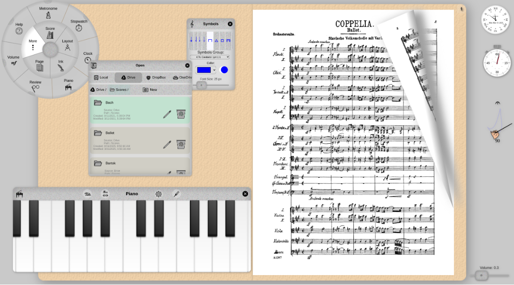

Podium

Podium is:
An e-reader for music scores.
100% browser-based: completely free, entirely open source, and totally
unsupported!
No installation, no registration, no login, no file import. Just use it!
Built for Google Chrome, but runs (fingers crossed) in any modern
desktop/tablet/smartphone browser.
Unique UI featuring a circular menu and multiple layouts.
Alternative to generic PDF viewers, customized for the layout and
annotation of scores in PDF format.
Not a music library: works with PDF files stored locally or in the
cloud. Uses PDF annotations and embedded document metadata to store user
edits.
...that runs on:
Touch screens devices: laptops, chromebooks, tablets, phones, and
conventional desktops and laptops.
...with input devices:
S-Pen, Apple Pencil, USI styli, fingers and thumbs.
Mouse, track pad, computer keyboard, page flip pedals.
...and practice tools:
Metronome, with experimental animated conducting hand.
On-screen piano keyboard, with functions for assisted tuning.
Replay tool for instant replay of last 1 minute(configurable) of
audio/video.
Stopwatch and clock.